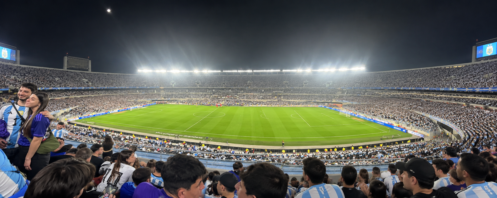
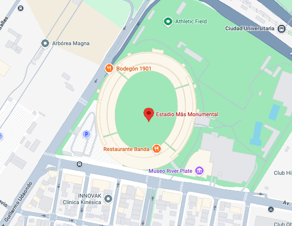
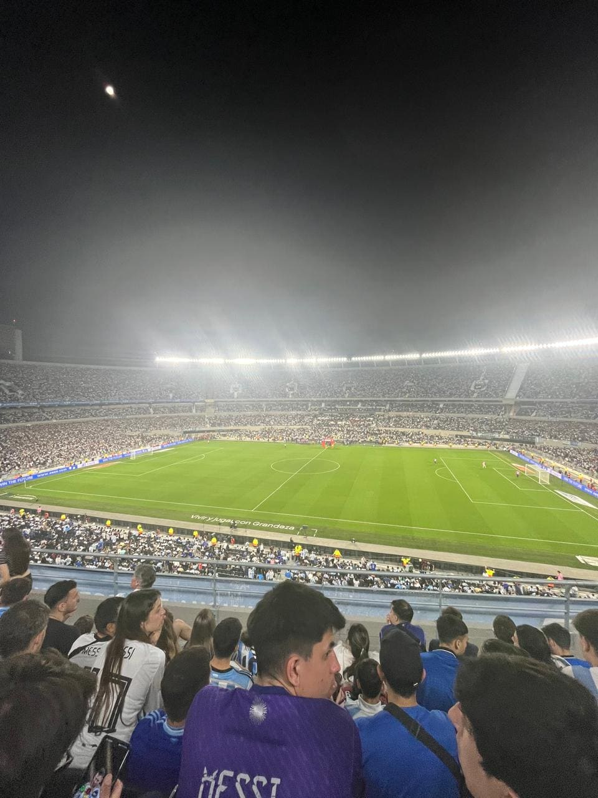
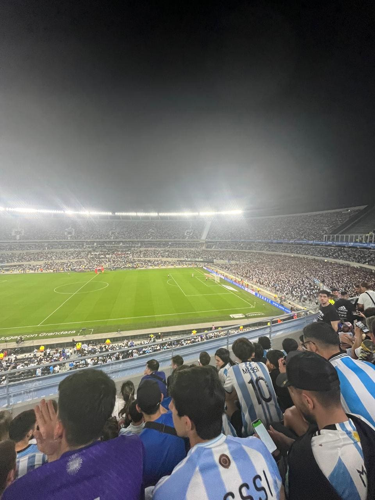
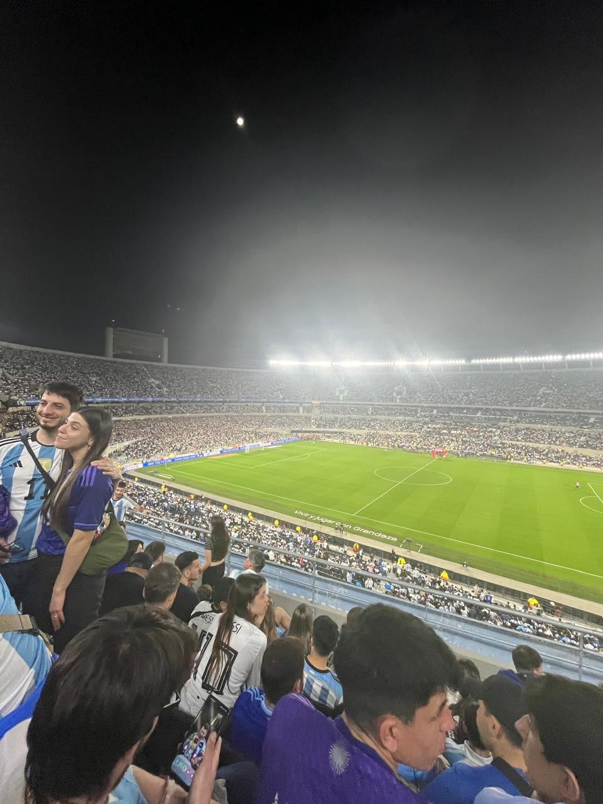

Sobre la cancha
El Estadio Monumental es uno de los escenarios más importantes y emblemáticos del fútbol
argentino. Su enorme capacidad, sus tribunas y la historia que se respira en cada rincón lo
convierten en un lugar único para vivir un partido. Además de ser la casa de River Plate, es un
estadio profundamente ligado a la historia de la Selección Argentina.
Recorrer sus tribunas permite dimensionar la magnitud que tiene este lugar dentro de la cultura
futbolera del país. La inmensidad del estadio, la gente y la vista del campo hacen que cada
visita se convierta en una experiencia difícil de comparar con cualquier otra cancha.
Contexto de imagenes
Una noche de Eliminatorias que terminó en una fiesta.
La visita al Monumental fue para ver a la Selección Argentina enfrentarse a Chile por las
Eliminatorias Sudamericanas. Argentina se impuso por 3-0, en un partido que terminó
convirtiéndose en una celebración para todos los que estuvieron presentes.
Desde las tribunas, la experiencia fue completamente diferente: miles de hinchas vestidos de
celeste y blanco, canciones, banderas y una energía que se mantuvo durante todo el encuentro.
Ver a la Selección jugar en el Monumental y vivir los goles desde la tribuna hizo que aquella
noche quedara como uno de los recuerdos más especiales de este recorrido.
Un partido, una victoria y la oportunidad de vivir desde adentro la pasión que genera la
Selección Argentina.
Ubicacion Geografica

Galeria de imagenes tomadas



